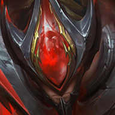

1. 嬴政、鲁班七号、庄周、白起、芈月、西施、蒙犽、鲁班大师
嬴政鲁班七号庄周

白起芈月西施蒙犽鲁班大师场次 2100 · 8人阵容 · 44种变阵
登场率 38.9% 登顶率 28.2% 前三率 73.0% 平均名次 2.60
常用棋手：嬴律 21.5%；常小娥 14.0%；白歌 10.8%
英雄出场率与推荐装备
| 英雄 | 阵容内出场率 | 场次 | 觉醒率 | 推荐装备（未解析时为ID） |
|---|---|---|---|---|
| 庄周 | 99.6% | 2092 | 93.9% |  643501 643501 643502 643502 643803 643803 |
| 蒙犽 | 96.6% | 2028 | 95.2% |  643103 643103 643705643803 643705643803 |
| 嬴政 | 67.7% | 1421 | 98.0% |  643402 643402 643801643803 643801643803 |
| 西施 | 100.0% | 2100 | 98.2% |  641006 641006 |
| 鲁班大师 | 87.9% | 1847 | 89.4% |  643208 643208 |
| 鲁班七号 | 99.6% | 2091 | 94.0% | |
| 芈月 | 71.4% | 1499 | 96.9% | |
| 白起 | 69.0% | 1449 | 88.3% |


 643802
643802 641015
641015 643302
643302 643603
643603 643301
643301
 643604
643604 810253
810253 643207
643207 643401
643401
 643703
643703 643304
643304 643403
643403
 643205
643205 810222
810222
 644116
644116
 643202
643202 641010
641010 643404
643404


 643504
643504
 643105
643105
 810250
810250 810076
810076 641004
641004 643701
643701 641021
641021 810098
810098
 643601
643601

 643104
643104 641001
641001 644107
644107 810252
810252 643804
643804 641009
641009